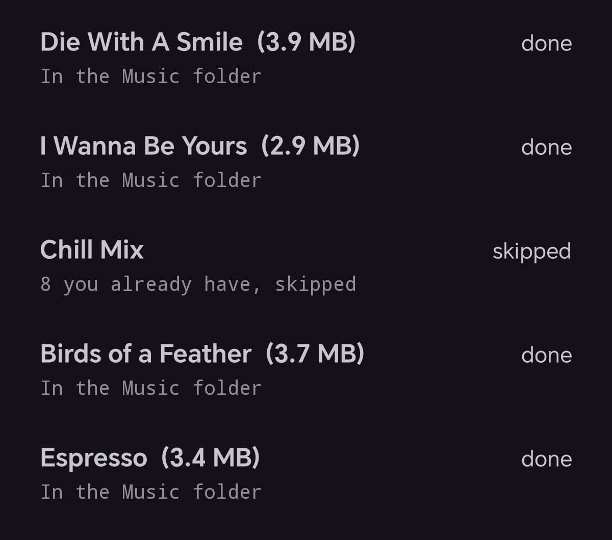

Songs from YouTube, saved to your phone with the right title, artist, album and cover art.
- Single songs and whole playlists
- Share a link straight from YT Music
- Failed downloads retry on their own
yt-music-downloader.apk · Android 10 and up

Setup
- Tap Download for Android and open the file once it's downloaded.
- Your phone asks if your browser can install apps. Allow it, then tap Install.
- Open the app once while you're online. It fetches yt-dlp, the tool that does the downloading.
- If it asks to send notifications, allow it. That's where downloads show how they're going.
How to use it
- In YT Music, open a song, album or playlist and tap Share, then Share with other apps.
- Pick YT Music Downloader.
- That's it. It downloads in the background, and a notification shows each song as it finishes.
- The songs land in your phone's Music folder, ready in your music app.
Or open the app, paste a YouTube link and tap Download.
What it's used for
- Keeping songs from YouTube Music on your phone, to play offline.
- Whole playlists and albums, not just single songs. Big ones too.
- Songs that show up properly in your music app, with title, artist, album, year and cover art.
- Topping up a playlist. Share it again and only the songs you don't have yet download.
What it isn't
- A music player. It saves the songs, and your music app plays them.
- A video downloader. You only get the audio.
- A sync tool. Take a song out of a playlist on YouTube and it stays on your phone.
- From YouTube or Google. It's an app I built, and it's not on the Play Store.
- For iPhone. Android 10 and up only, on 64-bit phones.
FAQ
Why does my phone warn me when I install it?
It's not from the Play Store, and Android warns about every app that isn't. Allowing it lets your browser install apps, and you can switch that off again afterwards.
Do I need YouTube Premium or an account?
No. The app doesn't sign in to anything.
What can it get to on my phone?
The internet and your notifications. It doesn't ask for your files, cause Android puts each song in the Music folder for it.
What quality are the songs?
128 kbps AAC, saved as .m4a. It's the audio YouTube streams, kept as it is, with no converting.
Downloads stopped working. What do I do?
Tap Update yt-dlp in the app. YouTube changes things now and then, and yt-dlp catches up with an update. If downloads keep failing and a newer one is out, the app tells you.
What if I share a song I already have?
It asks if you want it again or want to skip it. A playlist just skips the songs you already have.
Do plain YouTube links work?
Yes, but YT Music links come out cleaner. A YouTube video's title often has extras like "(Official Video)", and they end up in the song's name.
How do I get the newest version?
Tap Download for Android again. The button always gets the newest version.